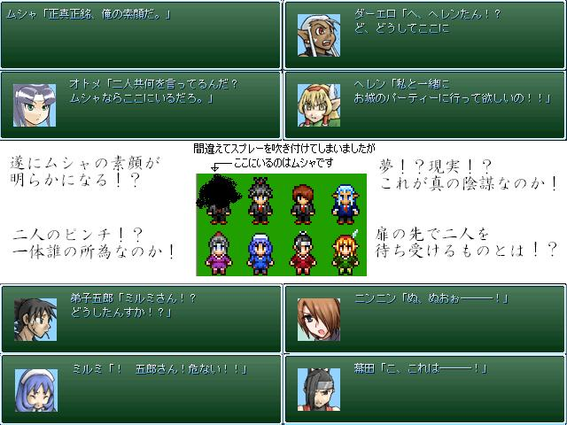

No.09-もしも５年前にエターなった作品を完成させたら

■もしも５年前にエターなった作品を完成させたら ５年後の俺
紹介文
５年前、エターナルの海に沈んだ一つの作品があった… とかそういうゲームじゃねぇからコレ！ 当時の俺がつけたタイトルは『もしも大規模な陰謀だったら』ですが 今見返すとどう見ても『僕の小規模な陰謀』です本当にあｒ（ｒｙ ジャンル … 一本道RPG プレイ時間 … １時間強 デフォ戦 … あり 謎解き … あり ミニゲーム … あり やっちまった感 … あり やるゲにする意味 … なし エターなった理由 … 倉庫番システムとか理解不能だった、それだけの話なんです… 作品投下はしたことあるけど祭り参加は初です よろしくお願いします 作品tkるたび話が長くなっていく…今度はもっと簡単な見るゲ作りたいです
管理人から一言: ムシャの素顔だと・・・ムシャムシャしてきた。
© VIPRPG